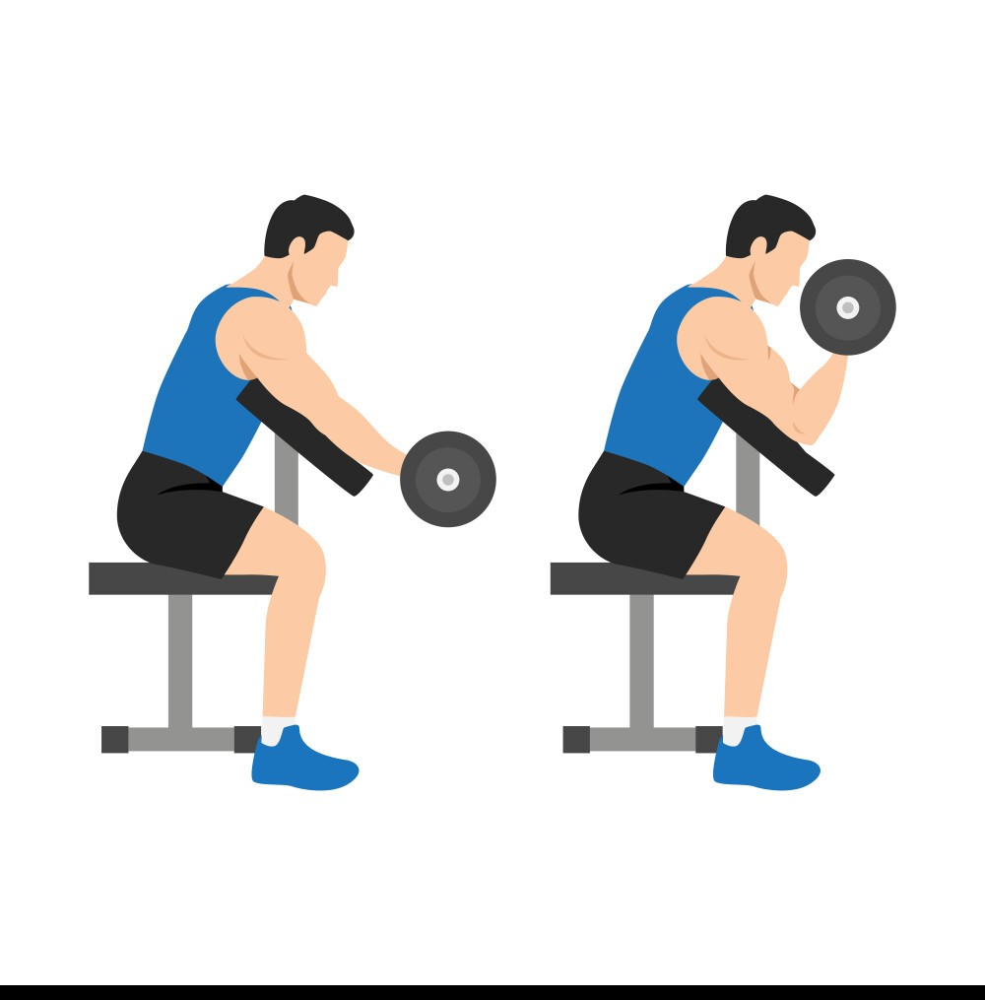

Exercise Description
Sit at a preacher curl bench with your upper arms resting on the pad and grip a barbell or dumbbells with palms facing up. Curl the weight towards your shoulders, then slowly lower it back to the starting position.
Reps and Sets
Beginners: 3 sets of 12-15 reps per hand
Weights: 5-7 kg dumbbells
Rest time between each set: 45secs
Video Implementation